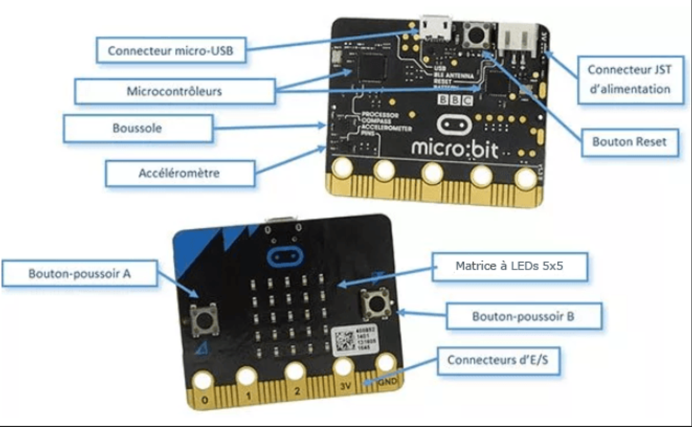

🕹️ Réaliser une Interface Homme-Machine (IHM)
Séance 2 — Activité guidée carte micro:bit
SNT — Seconde | Durée : ~2 heures
🎯 Objectifs
- Comprendre ce qu'est une IHM dans un objet embarqué
- Programmer une carte micro:bit pour réagir à des entrées (boutons, capteurs)
- Contrôler des sorties (LEDs, affichage, buzzer)
- Simuler un petit système embarqué complet
📌 La carte micro:bit
La carte BBC micro:bit est une carte microcontrôleur conçue pour l'éducation. Elle possède :
| Composant | Rôle |
|---|---|
| Matrice 5×5 LEDs | Afficher du texte, des images |
| Boutons A et B | Entrées utilisateur (IHM) |
| Accéléromètre | Détecter les mouvements, la secousse |
| Capteur de température | Mesurer la température |
| Boussole | Orientation magnétique |
| Bluetooth / Radio | Communiquer avec d'autres appareils |
Dans Tinkercad, on peut la programmer en Python (MicroPython) ou en blocs visuels.

📌 Partie 1 — Utilisation de la carte Micro:bit ?
Rendez vous à l'adresse suivante: https://capytale2.ac-paris.fr/web/c/b874-10483684
Vous découvrez alors une partie "programmation en python" avec du code du type:
# Importer la bibliothèque microbit
from microbit import *
# Boucle infinie
while True:
# Afficher une image
display.show(Image.HAPPY)
- Cliquer alors sur la flèche pour démarrer la simulation.
- La carte
micro:bitapparait à droite. - Vous observez un premier actionneur: une matrice de \(5 \times 5\) LEDS.
L'image affichée n'est qu'un exemple d'images que vous pouvez générer. Vous trouverez une banque d'image ici.
Exercice 1
Modifier l'image que vous afficher en choisissant une image parmi celles disponibles.
Exercice 2
Modifier votre programme de manière à afficher au moins 3 images différentes successivement et en boucle.
Remarque : la fonction sleep() permet de faire une pause. Le temps de pause en millisecondes (millièmes de secondes) s'insère entre les parenthèses.
Exercice 3
Bien sûr, il est possible de créer sa propre image sur le micro:bit. C'est facile.
Chaque pixel LED sur l'affichage physique peut prendre une parmi dix valeurs. Si un pixel prend la valeur 0 c'est qu'il est éteint.
En revanche, s'il prend la valeur 9 il est à la luminosité maximale. Les valeurs de 1 à 8 représentent des niveaux de luminosité entre éteint (0) et « à fond » (9).
Muni de ces informations, il est possible de créer une nouvelle image comme ça :
from microbit import *
bateau = Image("05050:"
"05050:"
"05050:"
"99999:"
"09990")
display.show(bateau)
- Recopiez ou copiez-collez ce code et voir le résultat.
Remarque : Avec l'instruction display.set_pixel(x,y,lum) il est possible de régler la luminosité des pixels de l'affichage individuellement de 0 (désactivé) à 9 (luminosité maximale). x et y varient de 0 à 4.
Exemple : display.set_pixel(1, 4, 9) allume la 2ème LED de la 5ème ligne.
- En utilisant
display.set_pixel(x,y,lum)etsleep(1000), faire clignoter le haut des mâts du bateau.
Exercice 4
Avec cette méthode, créez une image de votre choix. Programmez la et vérifier le bon fonctionnement.
📌 Partie 2 — Les boutons
Deux boutons sont présents sur la carte afin de rajouter de l'interactivité dans les programmes. Les fonctions associées sont :
button_a.is_pressed()renvoieTruesi le bouton est effectivement appuyé.button_a.was_pressed()renvoieTruesi le bouton a été appuyé.-
button_a.get_pressed()renvoie le nombre de fois que le bouton a été appuyé. -
Écrire un script qui affiche un smiley qui sourit 😊 lorsqu'on appuie sur le bouton
Aet un smiley triste 🙁 lorsqu'on appuie sur le boutonB.
Aide : Dans une une structure de boucle infinie (while True), inclure une structure conditionnelle (if appui bouton A -> action 😊 elif appui bouton B -> action 🙁).
Exercice 5:
À partir des parties précédentes, réaliser un programme qui simule un lancer de dé à 6 faces. Le programme devra choisir un chiffre entre 1 et 6 au hasard (on utilisera la fonction random qu'il faudra importer via l'instruction from random import *).
Un bouton servira à effectuer le lancer de dé tandis que l'autre permettra d'effacer l'écran.
L'instruction display.clear() permet d'éteindre les pixels de l'écran.
Code python à compléter :
from random import *
while True:
if button_a.was_pressed():
# A compléter
Améliorations possibles :
-
On pourrait faire s'afficher une petite animation sur l'écran simulant un dé qui roule ou des numéros qui défilent.
-
Au lieu d'afficher un chiffre, afficher une image avec une disposition de points, un peu comme sur les faces d'un véritable dé.
📌 Partie 3 — Utilisation des capteurs
La carte Micro:Bit comporte divers capteurs permettant d'effectuer des mesures de grandeurs :
- Un accéléromètre
- Un capteur de luminosité
- Un capteur de température
- Un capteur de champ magnétique (ou boussole)
Le capteur de lumière
En inversant la fonctionnalité des LEDs d'un écran pour devenir un point d'entrée, l'écran LED devient un capteur de lumière basique, permettant de détecter la luminosité ambiante.
La commande display.read_light_level() retourne un entier compris entre 0 et 255 représentant le niveau de lumière.
Exercice 6:
Compléter le programme ci-dessous pour qu'il affiche une image de lune si on baisse la luminosité (en recouvrant la carte avec sa main par exemple) et un soleil sinon.
Code python à compléter :
from microbit import *
soleil = Image("90909:"
"09990:"
"99999:"
"09990:"
"90909:")
lune = Image("00999:"
"09990:"
"09900:"
"09990:"
"00999:")
while True:
if display.read_light_level()>"Compléter ici":
display.show(soleil)
else:
display.show("Compléter ici")
sleep(10)
Aller plus loin: Créer un programme qui allume d'autant plus fort les LEDS que la luminosité est faible pour simuler un lampadaire intelligent tels qu'on les trouve dans les rues de Toulouse.
Le capteur de température
L'instruction temperature() renvoie la température de la carte micro:bit en degrés Celsius.
Par exemple, a = temperature() sauvegarde dans a la temperature.
Vous pouvez modifier la température avec le curseur sous la carte micro:bit.
Exercice 7:
Écrire un programme qui affiche la température sur la matrice de LED.
Aide : on pourra utiliser l'instruction display.scroll().
L'accéléromètre
Un accéléromètre mesure l'accélération de la carte micro:bit ; ce composant détecte quand la micro:bit est en mouvement. Il peut aussi détecter d'autres actions (gestes), par exemple quand elle est secouée, inclinée ou qu'elle tombe.
Les smartphones utilisent un accéléromètre pour savoir dans quel sens afficher les images sur son écran. Des manettes de jeux contiennent aussi des accéléromètres pour aider à tourner et à se déplacer dans les jeux.
- X : l'inclinaison de gauche à droite.
- Y : l'inclinaison d'avant en arrière.
- Z : le mouvement haut et bas.
Dans l'exemple suivant à essayer, l'instruction accelerometer.get_x() permet de détecter un mouvement de gauche à droite en renvoyant un nombre compris entre \(-1023\) et \(1023\) ; \(0\) étant la position «d'équilibre».
Exercice 8:
- Copiez-coller le programme ci-dessous et le faire fonctionner.
from microbit import *
while True:
abscisse = accelerometer.get_x()
if abscisse > 500:
display.show(Image.ARROW_E)
elif abscisse < -500:
display.show(Image.ARROW_W)
else:
display.show("-")
- Modifier ce programme pour ajouter des flèches vers le haut et vers le bas quand on oriente la carte micro:bit vers l'avant ou vers l'arrière.